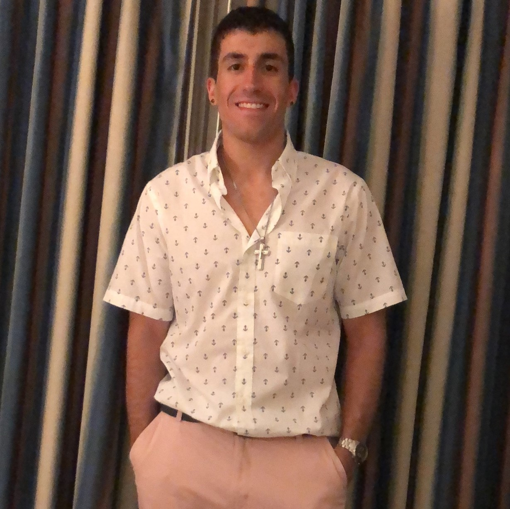

About Me

I am currently living in Berea, Ohio, and have just graduated from Notre Dame College in May, 2018, located in South Euclid, Ohio. Concluding my four years attending NDC, I earned my Bacholers of Arts Degree in Management Information Systems and have an interest in the field of Web Development and Cyber Security. Prior to College, I attended Trintiy High School, where I was introduced to the technology field through their internship program involving Information Technology, Graphic Design, Medical, and College Career readiness. After my choice of the Information Technology Department, I was exposed to the Hardware side of computers and apart of internships both at the highschool, St. Bridgets elementery school of Parma, and the Cleveland Museum of Art. In College, I was introduced to web development through a work study job with the web development team where I started to get exposure to coding and the basics. After a college web development/graphic design internship at the Kelvin Smith Library of Case Western University, I wanted to expand my knowledge in coding by attending the Case Westerns Coding Bootcamp where I will get the experience to become a good coder, and use these skills to enhance my career choices further down the road.
Some of my hobbys include traveling, skiing, coding, playing the Alto Saxophone, spending time with friends, and exercise. I enjoy watching sports and played Ice Hockey throughout my childhood until college. During Highschool and College, I was apart of the marching band as well as concert band. During my freshman year of College, I was part of the Notre Dame College Indoor Winds Ensemble, a seperate group representing the college who competed against other groups around Ohio to later make it to WGI World Championships in Dayton. WGI is a traveling competition of indoor marching bands throughout the world, where one is judged off overall performance, music, uniqueness, and physical technique.